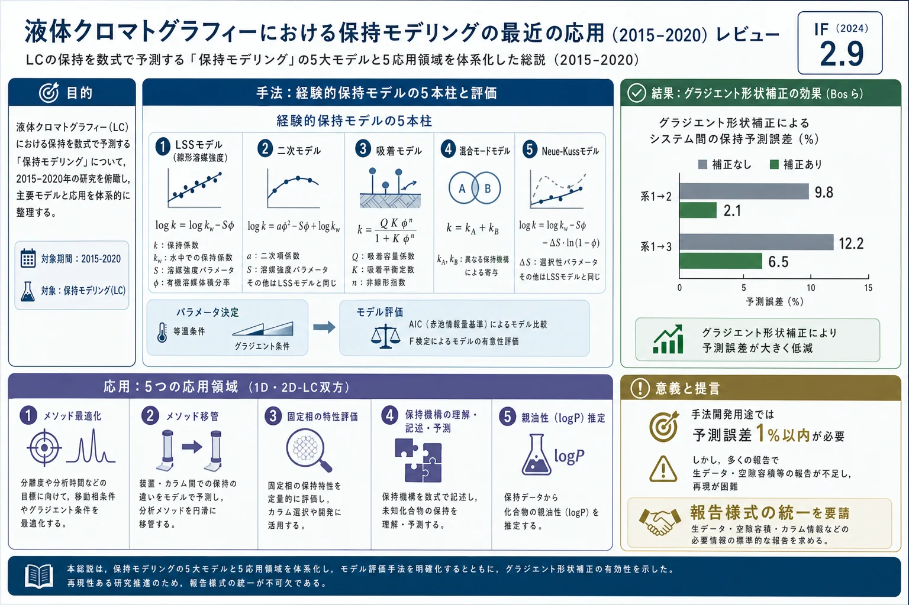

液体クロマトグラフィーにおける保持モデリングの最近の応用（2015–2020）レビュー

<!-- 方針: ほぼ全訳＋必要に応じた補足。原文構成に沿って訳出。数式は原文の式番号を保持。「> 補足:」は訳者注。 -->
書誌情報
- 原題: Recent applications of retention modelling in liquid chromatography
- 著者: Mimi J. den Uijl, Peter J. Schoenmakers, Bob W.J. Pirok, Maarten R. van Bommel（アムステルダム大学 van 't Hoff 分子科学研究所 分析化学グループ／Centre for Analytical Sciences Amsterdam (CASA), オランダ）
- 掲載: Journal of Separation Science 2021; 44(1): 88–114. https://doi.org/10.1002/jssc.202000905（オープンアクセス, CC BY）
- インパクトファクター: 2.9（J. Sep. Sci., JCR 2024 / Clarivate。Q2。出典により2.9〜3.2と幅あり）
- 受理経過: 受領 2020-08-20 / 改訂 2020-10-02 / 採録 2020-10-12
補足: 本論文は漢方・生薬に限らない LC（液体クロマトグラフィー）の分析法一般を対象としたレビューで、QC分析の土台になる「保持（リテンション）の数式化」を体系的にまとめたもの。生薬QCで多用されるHPLC/UPLC指紋・多成分定量・2D-LC・HILICのメソッド開発を高速化する道具として直接役立つ内容のため収録した。主要用語: LC=液体クロマトグラフィー、RPLC=逆相LC、HILIC=親水性相互作用LC、NPLC=順相LC、SFC=超臨界流体クロマトグラフィー、2DLC=二次元LC、φ（ファイ）=移動相中の有機溶媒（強溶媒）の体積分率、$k$=保持係数。
要旨（Abstract）
液体クロマトグラフィー(LC)における保持モデリングの最近の応用(2015–2020)を包括的にレビューする。この分野の基礎（もっと古くに遡る）も要約する。保持モデリングは、保持機構の研究、親油性などの物理パラメータの決定、さらにメソッド開発・最適化・移管、固定相の特性評価・比較といった実務的目的に用いられる。本レビューは移動相組成が保持に与える影響を中心に据えつつ、他の変数やそれらを記述する新しいモデルも扱う。最も一般的な5つのモデル——対数線形（線形溶媒強度, LSS）モデル・二次モデル・対数対数（吸着）モデル・混合モードモデル・Neue–Kuss モデル——を詳細に論じる。モデルパラメータの決定に等温(isocratic)・グラジエント法を検討し、フィットしたモデルの評価・検証も議論する。1次元・2次元LC分離の開発・最適化に保持モデルを適用する戦略を論じ、最後に全体的な結論と具体的な提言を示す。
キーワード: 親油性の決定、メソッド最適化、メソッド移管、固定相特性評価、保持機構
1. 序論（Introduction）
LCは分析化学者の道具箱で最も重要かつ普及した技術の一つ。保持モデリングは、メソッドを迅速に開発するための有用な手法である。LCでは分析対象(アナライト)が固定相と移動相の間に分配される。カラムを通過する時間を保持時間 $t_R$ と呼び、次式で表される。
$$t_R = t_0 (1 + k) \tag{1}$$
ここで $t_0$ はカラムの死容積時間(ホールドアップ時間)、$k$ は保持係数で、分配係数 $K$ と次のように関係する。
$$k = \frac{q_s}{q_m} = \frac{c_s}{c_m}\frac{V_s}{V_m} = K\frac{V_s}{V_m} \tag{2}$$
$q_m, q_s$ は移動相・固定相中のアナライト総質量、$c_m, c_s$ は両相の濃度、$V_m, V_s$ は各相の体積。保持係数は pH・温度・移動相組成（強溶媒の体積分率 φ）など多くのパラメータに依存する。$k$ をこれらに結びつける式が保持モデルであり、実験データにモデルを当てはめる過程が保持モデリングである。
LCは等温(isocratic)またはグラジエント(gradient)で行える。等温では移動相組成が一定で $k$ が一定。グラジエントでは移動相の溶出力を運転中に上げるため $k$ が低下する。グラジエントで $k$ を溶媒強度に結びつけるにはグラジエント方程式が必要。化合物がグラジエント開始前に溶出するなら式(1)で（$k$ は初期有機溶媒濃度での値）、グラジエント中に溶出するなら線形グラジエントの一般式(3)で保持時間を計算する。
$$\frac{1}{B}\int_{\varphi_{init}}^{\varphi_{init}+B(t_R-\tau)}\frac{d\varphi}{k(\varphi)} = t_0 - t_{init} + \frac{t_D}{k_{init}} \tag{3}$$
$k(\varphi)$ は保持モデル（後述2.1節）、$B$ はグラジエントの傾き（$\varphi = \varphi_{init}+Bt$）、$\tau$ はドウェル時間 $t_D$・グラジエント開始前時間 $t_{init}$・死容積時間 $t_0$ の和。アナライトがグラジエント後に溶出する場合は式(4)を用いる（$t_G$=グラジエント時間）。
$$\frac{1}{B}\int_{\varphi_{init}}^{\varphi_{final}}\frac{d\varphi}{k(\varphi)} + \frac{t_R-\tau-t_G}{k_{final}} = t_0 - t_{init} + \frac{t_D}{k_{init}} \tag{4}$$
保持モデリングは主に、多様なLC・超臨界流体クロマトグラフィー(SFC)で迅速・効率的なメソッド開発を助けるために使われる。応用は、(i)新規固定相の特性評価と保持機構の解明、(ii)メソッド最適化（より良い分離）、(iii)メソッド移管（異なる装置間の整合)、(iv)保持のより正確な理解・記述、に分けられる。加えてクロマトグラフィー以外（製薬・環境科学）でも、新規合成物のオクタノール–水分配係数 $\log k_{ow}$ の決定や汚染物質の環境残留性評価に使われる。
保持モデルの一般形は「保持パラメータ」と「システム・アナライトのパラメータを組み合わせた関数」の関係として書ける。
モデルの3系統＋経験モデル
- 線形自由エネルギー関係(LFER): 関数を少数（通常5個）の積項の和とする。各項はシステムパラメータ $s_i$ とアナライトパラメータ $a_i$ の積。
$$\log k_{i,s} = \sum_{i=1}^{n} a_i s_i \tag{5}$$
各項はアナライトと固定相の特定の相互作用に緩やかに対応。例: Snyder の疎水性減算モデル(HSM)、Abraham のモデル。目的は保持予測ではなく固定相の特性評価・分類。移動相組成の効果は記述しない。アナライトの特性評価は手間だが、システム（カラム）の特性評価は容易で、多数の固定相の値が表化されている。
- 定量的構造–保持関係(QSRR): アナライトの構造記述子と保持の間の統計的関係。多数化合物の大規模データに基づき、構造パラメータが計算できれば新規化合物の保持を予測できる（薬理活性のQSAR、物性のQSPRと類似）。
- 人工ニューラルネットワーク(ANN): 脳の構造に着想を得た計算モデル。入力層・出力層と1つ以上の隠れ層からなり、膨大なデータセットを要する。
- (準)経験モデル: 保持を記述する抽象パラメータを持つモデル。少ない入力データで内挿・外挿により新規データを予測でき、LCメソッド開発の支援に極めて有用。本レビューは以降このクラスに絞る。経験モデルのパラメータは特定の機構に結びつかない抽象量だが、アナライト・測定パラメータ（φ、塩濃度、pH等）を $k$（多くは $\log_{10}k$ か $\ln k$）に結びつける。モデルに含まれない変数（固定相・温度）は一定に保つ必要がある。
計算資源の増大により、試行錯誤よりも in silico 手法が魅力的になっている。本レビューはメソッド最適化・移管、固定相特性評価、保持の理解・記述、親油性決定に焦点を当てる。
2. 背景理論（Background Theory）
多くの場合、移動相の有機溶媒体積分率 φ が最重要変数。広く使われるのは2〜3パラメータのわずか5モデル——LSS・二次(Q)・吸着(ADS)・混合モード(MM)・Neue–Kuss(NK)。最適化ソフト（Drylab, PEWS2, MOREPEAKS 等）はこれらのモデルに依拠する。
2.1 モデル
2.1.1 線形溶媒強度(LSS)モデル
Snyder らが RPLC 向けに導入した対数線形モデル（分配モデルとも）。
$$\ln k = \ln k_0 - S_{LSS}\,\varphi \tag{6}$$
$\ln k_0$（$\ln k_w$ とも）は純水中の等温保持係数、傾き $S_{LSS}$ は溶質と有機溶媒の相互作用に関係。パラメータは φ の異なる2回の等温測定から算出できる。2015–2020の90件のうち55%が1D RPLC、残りは2DLC・HILIC・SFC等（Figure 1A）。
2.1.2 二次(Q)モデル
Schoenmakers らが導入。LSSにもう1項を加えた拡張で、$\ln k$ と φ の関係を線形から凸に。
$$\ln k = \ln k_0 + S_1\varphi + S_2\varphi^2 \tag{7}$$
$S_1, S_2$ は経験係数。過去6年で45件、主用途はRPLC(47%)、HILIC(23%)にも(Figure 1B)。
2.1.3 吸着(ADS)モデル
1960–70年代に Soczewiński・Jandera・Snyder らが順相LC(NPLC)・薄層(TLC)で提示。対数対数モデル、Snyder–Soczewiński モデルとも。
$$\ln k = \ln k_0 - n\ln\varphi \tag{8}$$
$n$ は溶媒和数で、強溶媒分子とアナライトが占める表面積の比を表す。LSSと違い $\ln k$ は $\ln\varphi$ と線形。当初NPLC向け(12%)だが今はHILIC(35%)・RPLC(30%)が主(Figure 1C)。
2.1.4 混合モード(MM)モデル
Jin らがHILIC記述用に開発。HILICとRPLCの両保持モードを説明でき、LSSとADSの結合形。
$$\ln k = \ln k_0 + S_1\varphi + S_2\ln\varphi \tag{9}$$
$S_1$ は溶質–溶媒相互作用、$S_2$ は溶質–固定相相互作用に対応。主用途はHILIC(69%)(Figure 1D)。
2.1.5 Neue–Kuss(NK)モデル
5モデル中最新の3パラメータモデル（Nikitas らの別モデルに基づく）。
$$\ln k = \ln k_0 - \ln(1 + S_1\varphi) - \frac{\varphi S_2}{1 + S_1\varphi} \tag{10}$$
$S_1$ は傾き、$S_2$ は $\ln k$ 対 φ 曲線の曲率。グラジエント溶出時間へ積分すると厳密解が得られる。Neue と Kuss は2010年に次の版を発表(第2項の符号と係数2が違うのみ)。
$$\ln k = \ln k_0 + 2\ln(1 + S_1\varphi) - \frac{\varphi S_2}{1 + S_1\varphi} \tag{11}$$
グラジエントRPLC向けに開発され応用の45%、HILICにも25%(Figure 1E)。
2.2 データの測定と利用
モデルの使い方は、フィットに用いるデータ点の数と種類（等温かグラジエントか）に依存する。
2.2.1 等温データかグラジエントデータか
全モデルが等温・線形グラジエント双方の最適化に使われてきた。等温データは異なる有機溶媒濃度で収集する必要があり、全化合物が妥当な時間で溶出するとは限らず手間。グラジエントなら1回で全アナライトを妥当な時間に溶出できる。グラジエント溶出時間や溶出時のφを計算するには、用いる保持モデルをグラジエント方程式(式3・4)に数値積分する。逆に、グラジエント実験（スキャニンググラジエント）からモデルパラメータを求めるには、実効傾き(b)を実験間で変える必要がある。実効傾きは「$\ln k$ 対 φ 曲線の傾き（例 $S_{LSS}$）」「グラジエントの傾き $B=\Delta\varphi/\Delta t$」「ホールドアップ時間 $t_0$」の積。
$$b_{LSS} = S_{LSS}\,B\,t_0 = S_{LSS}\,B\,\frac{V_0}{F} \tag{12}$$
実効傾きは (i) グラジエントの傾き $B$、(ii) カラム体積、(iii) 流速、のいずれかで変えられる。
予測精度は選ぶ溶出モードに影響される。Vivó-Truyols らの誤差解析では、等温実験の入力データが最も正確な予測を与えた。グラジエント実験に基づくモデルでも等温を予測できるが、限られた溶媒組成範囲でのみ正確。グラジエント保持はスキャニンググラジエントから予測できるが、実験データ要件の研究は乏しく、精度は「予測グラジエントの傾きがスキャニング傾きにどれだけ近いか」「内挿か外挿か」「実験精度」など多くの要因に依存する。
2.2.2 入力データ点数とモデル評価
パラメータ数が必要な入力ラン数を決める。2パラメータモデル（ADS・LSS）は各成分に最低2点、3パラメータモデル（MM・NK・Q）は最低3点必要。パラメータを増やすと過学習の危険が増す。複数モデルを比較する際、パラメータ数の多寡でモデルの真の質が隠れることがあるため、赤池情報量規準(AIC) で補正する（パラメータ増にペナルティ）。
$$AIC = 2p + n\left[\ln\left(\frac{2\pi\cdot SSE}{n}\right) + 1\right] \tag{13}$$
残差平方和(SSE)をパラメータ数 $p$・観測数 $n$ で補正。値が低い（より負)ほど良い当てはまりで、正しいモデル選択を助ける。もう一つの方法は回帰のF検定で、第3項の追加が有意かを調べる（適合度ではなく、3パラメータモデルとその縮約形の差を評価）。5モデルのうち (i) Q と LSS、(ii) MM と LSS、(iii) MM と ADS の組で実施できる。
3. 方法：保持モデリングの5つの応用領域（Methods）
文献レビューから、保持モデリングが応用される5領域を同定した（Figure 2 にワークフロー）。
3.1 メソッド最適化
3.1.1 1次元分離の最適化
移動相成分と固定相を選んだ後、保持モデルで分離を最適化できる。例: 多孔質グラファイトカーボン(PGC)カラムでの植物油分離で、Zhang らがLSSモデルとイソプロパノール–トルエングラジエントを用い、トルエン分率 $\varphi_{Tol}$ の $S_{LSS}$ への効果を検討（全トリアシルグリセロールで類似→全濃度で同一選択性）。逆に $S_{LSS}$ の差は、溶媒濃度で選択性をどこまで調整できるかを示す。Fekete らはタンパク質で非常に大きな $S_{LSS}$ を報告し、有機溶媒濃度を0.8%上げると保持が10分の1に低下——これがタンパク質RPLCでグラジエントが不可欠な理由の一つ。保持容量の増す順にカラムを直列結合し多段グラジエントを適用すると選択性が改善する。
移動相組成に加えサンプル溶媒も重要。溶離液とサンプル溶媒の溶出力差が大きいと、ブレークスルーやピーク変形が起きる。Jeong らは高溶出力溶媒を弱溶離液へ注入する効果をシミュレート（LSS・NKで局所保持係数を計算）、シミュレーションが実験と一致(Figure 3)。Boateng らはメトキシフェニジンの3位置異性体分離を、温度・pH・有機溶媒濃度の最適化で改善（pHをADS、φをLSSまたはQ、温度をvan 't Hoff式で記述）、3×3の入力データで予測誤差5%未満の最適分離を得た。Vaňková らはLSSでグラジエント急峻度のピーク圧縮効果を検討し、グラジエント時間/カラム死時間の比=12 が小分子で最良の速度論性能を与えると報告。Gritti はNKに基づく新式でピーク広がりを予測（複雑なグラジエントプログラム向け。線形/非線形で有意差なし）。
感度最大化も目的の一つ。オンカラム濃縮（溶媒強度低下や温度変更で全アナライトをカラム入口に保持）では、Rerick らが温度効果を含む拡張NKモデルを外挿して冷却時の保持を予測。Chang らはLSS・ADSのパラメータをピークピッキングに用い（保持挙動と同位体比の類似でクラスタリング）、複雑な天然抽出物中の206の前駆イオンを迅速同定した。
3.1.2 2次元分離の最適化
2DLCは、異なる2機構の組合せとピーク容量の増大で普及。ただし最適化は複雑化する。各次元(グラジエント)の最適化にはLSSがよく使われる。$S_{LSS}$ は直交性（2次元の選択性の異なり度合い）の指標にも使われ、試料全化合物の平均 $S_{LSS}$ で直交度 $O_d$ を計算する。
$$O_d = \gamma\cdot S_{LSS,1}\cdot S_{LSS,2}\cdot\Delta\varphi_{e,1}\cdot\Delta\varphi_{e,2} \tag{14}$$
両次元の平均 $S_{LSS}$ と各グラジエントの有機溶媒濃度差 $\Delta\varphi_{e}$、理論保持面積に対する補正係数 γ の積。D'Attoma らが開発し、Iguiniz らがペプチドのRPLC×RPLCに適用（従来の1DLCより多くの化合物を分離）。ただし検証にはさらなる研究が必要。2DLCの課題である溶媒ミスマッチ（一方の弱溶媒が他方では強溶媒）について、Stoll らはNKで注入溶媒と2次元移動相のミスマッチをモデル化し、ループ容積・充填を変えて検討。Muller らはHILIC–RPLC結合時の希釈係数の効果をNK・LSSでモデル化（$k_{ss}$ と $k_e$ の予測はLSSとNKで類似）。
3.1.3 最適化プログラムと戦略
計算力の増大で多くのLC最適化ツールが開発（Drylab, ChromSword, PEWS2 等。多くはRPLC限定だが汎用の3パッケージあり）。Fasoula らはマルチリニアグラジエント用のExcel VBAマクロ群を開発（10モデルを内蔵。2パラメータのADSがシミュレーション・実験をよく記述。Qのようにパラメータを増やすと精度は上がるが計算資源を消費）。同グループはRで発展版も発表。Pirok らは2DLC用最適化プログラム(PIOTR)をMATLABで開発（RPLCにLSS、IEX(イオン交換)にはφを塩濃度[c]に置換したADS。入力はグラジエント傾きが3倍違う2回のLC×LCランのデータ。Figure 4)。保持時間はよく記述したがバンド広がりは説明できず。NK・MM・Qを追加するとHILICのペプチド分離にも有効。Zhang らは遺伝的アルゴリズム(GA)と多層パーセプトロンANN(MLP-ANN)でRPLCを最適化。Alvarez-Segura らはGAと多スケール最適化(MSO)を比較（NKで多リニアグラジエントを模擬。GAは微調整が苦手だが両者ほぼ同等の結果）。
3.2 メソッド移管（Method transfer）
保持モデリングは異なるハードウェアへのメソッド移管を高速化できる。グラジエント法の移管では、ミキサー・ポンプ・配管の違いによるドウェル容積とグラジエント形状の差が問題になる。Bos らは形状起因の変形補正を組み込んだ応答関数ベースのアルゴリズムを開発。少数化合物のLSSパラメータを異なるシステムで（グラジエント形状補正あり/なしで）決定した結果、システム間の保持予測誤差が 系1→2 で 9.8%→2.1%、系1→3 で 12.2%→6.5% に低下（本ページ冒頭のグラフ）。ただし溶媒特性やソルバトクロミック効果によるものはさらなる検討が必要。
Jandera らは短いモノリスカラムの高速グラジエントで4モデルの保持予測を比較（100%水始発1分グラジエントで予測誤差0.7〜1.5%。短カラムでもモデルが有効。高速グラジエントではADSが最も正確）(Figure 5)。Gritti は粒子は同じで平均細孔径の異なる2カラム間のグラジエント法移管を研究し、LSS/NKに基づく3方式を提案: (1)「垂直」移管（両カラムでLSS成立・$S_{LSS}$ 不変と仮定、カラム相比の差 $\ln(\phi_1/\phi_2)$ のみで保持が変わる)、(2)「水平」移管（溶離液組成を $\varphi\to\varphi+\Delta\varphi_{1\to2}$ ずらすと保持係数が一致・シフト量は化合物固有）、(3) in silico 法（グラジエント急峻度と初期濃度を変えて最適解を探索)。垂直が最悪、in silico が最良（LSSの線形性は近似にすぎないため)(Figure 6)。
3.3 固定相の特性評価と比較
カラム・固定相の開発・特性評価によく使われる。中心はLFERやHSMのようなモデルで、巨大なカラムDBに至る（相互作用の程度と全保持への寄与を確立。序論で既述のため本レビューでは詳述しない）。統計試験による分類や数理モデルによる保持予測もあるが、これらは保持モデル記述子以外の情報を扱うため対象外。第4の手法が準経験モデルの適用で、モデルへの当てはまりが支配的機構（混合モード・逆相・順相、特にHILIC）を示す。近年HILICが普及し機構理解が進み、多数のHILIC固定相が開発された。有機溶媒レベルでRPLC/HILICを切替えられる固定相も人気。
3.3.1 カラム比較
新規カラムはプローブ化合物の保持差で既存法と比較される。Vyňuchalová らはC30結合シリカを、同族アルキルベンゼンの保持について拡張LSSモデル（メチレン基選択性 α と末端基寄与 β を含む）でC4/C8/C18と比較。
$$\log k = \log\beta + n\log\alpha = \alpha_0 + \alpha_1 n - (m_0 + m_1 n)\varphi \tag{15}$$
C30は標準RPLCより低いパラメータ（メチレン基・末端基の寄与が小さい）を示した。Héron らはフラッシュ精製用固定相と分析用固定相をLSSベースのモデルで比較（$S = p + q\ln k_w$、式16-17）。graphitic carbon（黒鉛カーボン）は極性・非極性双方を分離でき、Lunn らはNKで等温データから算出した $\ln k_0$ を濃縮能の指標とした（外挿値が100%水での保持を予測）。
3.3.2 新規固定相の分類
HILIC・混合モードの普及で固定相開発が増加。RPLCの発展は幾何形状（ピラーアレイ・チャネル形状）やイオン交換の付加（混合モード化）が中心。2015年 Peristyy らは合成多結晶ダイヤモンド上の小分子保持をADSでフィット（極性化合物ほど高い $n$ 値→表面の水素結合と、PAH–平面固定相間の弱い分散力を示唆)。HILIC機構の確認にはプローブ化合物の保持を各φで測りMMモデルにフィット（高い回帰係数→良い当てはまり→HILIC機構を確認。φが0と1に近いと高保持・中間で低保持のU字プロファイル、Figure 7）。MMはLSS+ADSなので両者に個別フィットして支配機構を探ることもある。多くのHILIC固定相はポリマー系（分岐ポリエチレンイミン、ポリビニルアルコール–カチオン性セルロース共重合体、ポリグリセロール等）。新規固定相は複数選択性（混合モード）を示すことがあり、Jin の混合モードモデルで記述できる。
$$\log k = a + m_{RP}\cdot\varphi_{H_2O} - m_{HILIC}\cdot\log\varphi_{H_2O} \tag{18}$$
$a$ は分子サイズと相互作用、$m_{RP}$ は溶質–溶媒、$m_{HILIC}$ は溶質–固定相の直接相互作用に対応。$\log k$ 対 $\varphi_{H_2O}$ プロットの最小点 $\varphi_{min}$（RPLC↔HILIC転移点)は次式で、試料と固定相の極性に依存する。
$$\varphi_{min} = 0.434\cdot\frac{m_{HILIC}}{m_{RP}} \tag{19}$$
3.3.3 SFCとLCのカラム比較
SFCは近年再評価され、LCと比較されている。Vera らは直鎖多核芳香族炭化水素のSFC/LC選択性差を2報で報告（LSSで保持をモデル化。SFCでアセトニトリルをメタノールと同%使うと保持時間が半減→SFCの保持最適化はHPLCと大きく異なる。同じカラムでもPAHはRPLCとRP-SFCで異なる保持)。
3.3.4 異なるカラム形状の比較
結合固定相に加え幾何形状の改良も進む。Gilar らは直線・蛇行マイクロ流路の性能をLSS（固有グラジエント急峻度 $b = S_{LSS}\times\Delta\varphi\times t_0/t_g$）で評価（曲がりは効率に負の影響だがグラジエントで軽減）。Gritti らは円錐形カラムをLSSで評価（グラジエント時、円錐形はピークテーリング低減で円筒形より有利)。固定相グラジエント（カラム軸方向に固定相が変化)についてもNKで等温データから保持を予測（実験とよく一致。固定相グラジエントの向きで保持係数が増減）。
3.4 保持の理解・記述・予測
保持機構の理解も目的の一つ（特にHILIC）。ただしφのみのモデルでは保持を完全には記述できず、緩衝液濃度・pH・温度も分離効率に影響する。
3.4.1 既存モデルによる保持の理解
逆相LC (RPLC): 多くはLSSを適用。Q・NKなど高次モデルはよく記述するが入力データ増と過学習の危険を伴う。Gilar らはNKとLSSを比較し、LSSパラメータを3通り（全範囲／$\ln k>0$のみ／$k$が1〜30）で算出すると大きく異なると示し、非線形モデルが最良・LSS使用時は $\ln k<0$ のデータを除くべきと提言。Tyteca らも小分子・ペプチドでLSSからの逸脱を確認しQ・NKが良好。タンパク質は $\ln k$ 対 φ 曲線が非常に急峻で非線形挙動を証明できなかった。スキャニンググラジエント研究では、入力実験が少ないと2パラメータ（LSS・ADS）が良好、増やすとADSが最良。よく仮定される「最速/最遅スキャニング傾きの比≧3」より、予測グラジエント傾きとスキャニング傾きの近さが重要と判明。極端なφでの保持推定には Jandera らが3パラメータのABMモデル（純強溶媒・純弱溶媒 φ=0,1 を推定）を開発。
$$k = (a + b\varphi)^{-m} \tag{20}$$
LSSやADSより良い予測を与えHILICにも使える。Baeza-Baeza らはLSSを溶出度 $g$ で拡張し線形性に影響を与えた。等温の精度とグラジエントの速さを両立するため、等温ランに溶媒濃度パルスを加える手法も提案（等温実験と一致するパラメータを得た）。
順相LC (NPLC): 人気低下で発展は少ない。ADSの $n$ 項について Snyder と Soczewiński の解釈差（1:1吸着 vs 分子面積比）を Wu らが検証（古典NPLC相はSnyder、電荷移動相(DNAP)はSoczewiński がよく予測)。
HILIC: 高極性・イオン性化合物の分離で応用増。機構は未解明で多くのレビューがある。近年は緩衝液・塩・濃度・pH・有機溶媒・温度・固定相を含むメソッド全体の最適化に焦点。φ最適化にLSS・ADS・Q・MMが使われ、しばしば複数モデルを併用（分配機構と吸着機構の判別）。pHは裸シリカカラムでのみ保持に有意（カラム電荷への影響大）。Euerby らは7モデル（保持）＋3モデル（温度）を適用し、パラメータ重要度を統計的にランク付け——保持では 有機溶媒含量 > 固定相 > 温度≈pH≈緩衝液濃度、選択性では 固定相 > pH > 緩衝液濃度 > 温度 > 有機溶媒含量。Cesla らは5モデルをオリゴ糖の保持に適用（全5モデルが同程度に当てはまり）。Rácz ら（Drylab）・Roca ら（MOREPEAKS）はLSS/ADS/Q/MM/NKを使用（前者は幻覚性キノコ抽出物、後者はBSAトリプシン消化物。F検定でモデル選択を確認）。Pirok らはHILIC代謝物分離でADSが最良（スキャニンググラジエント2回で許容精度。diolカラムがamideより予測精度良好)。グラジエント形状の装置由来の歪みが課題で、Wang らは逆算法で補正し「カラム歪みはHILICでRPLCよりずっと重要」と結論。
混合モードクロマトグラフィー: RPLCとHILICの二重機構をU字プロファイル（式19の最小点で主機構が切替わる)で記述。Obradovic ら・Balkatzopoulou らがMMモデルで機構を確認。
その他のLC: ミセルLC(MLC)・臨界クロマトグラフィー(LCCC)・キラルクロマトグラフィーにも適用。標準モデルは使えないため専用式を用いる。Navarro-Huerta らはMLCで界面活性剤濃度固定の次式が最も正確とした。
$$\frac{1}{k} = c_0 + c_1\varphi + c_2\varphi^2 + c_3\varphi^3 + c_4\sqrt{\varphi} \tag{21}$$
Hegade らは固定相最適化選択性(SOSLC)にQを適用しエナンチオマー分離を予測（予測誤差 等温2〜7%・グラジエント0〜12%）。SFCはLCと類似機構が多く、Tyteca らはMM・Q・NKを適用（NK・MMが最良。ただし圧力差で等温↔グラジエント変換が難しい）。De Pauw らは、SFCの保持は有機溶媒の体積分率より質量分率で記述するのが最良と報告。
3.4.2 保持理解のための新モデル開発
多くのモデルでは、入力データの溶出モードと予測したい溶出モードを一致させるべき（等温入力→等温予測が信頼できる。グラジエントはさらに制約が多い）。これを変換する「iso-to-grad」手法もある。Stankov らは二溶媒溶離液（メタノール＋アセトニトリル)に適用し、QとLSSに基づく3〜8パラメータの4つの等温モデルを開発（グラジエント測定化合物で平均RMSE/min=0.743）。最良は式(22)（少なくとも9点必要)。
$$ \begin{aligned} \log k = a_0 &+ a_1\varphi_{MeOH} + a_2\varphi_{ACN} + a_3\varphi_{MeOH}^2 + a_4\varphi_{ACN}^2 \\ &+ a_5\varphi_{MeOH}\varphi_{ACN} + a_6\varphi_{MeOH}^2\varphi_{ACN} + a_7\varphi_{MeOH}\varphi_{ACN}^2 + a_8\varphi_{MeOH}^2\varphi_{ACN}^2 \end{aligned} \tag{22} $$
Tsui らはRPLC向けに3パラメータの平衡定数化学量論置換モデルを開発（溶質–収着剤・溶質–ACN・ACN–収着剤の相互作用を考慮。式23。全ACN範囲の非線形性を説明できたが従来モデルとの比較がなく性能評価は困難)。Gritti は溶媒・温度同時グラジエント(CST-GLC)向けにLSSとvan 't Hoff式を結合。
$$k'(\varphi, T) = k'(0)\,e^{-S_{LSS}(\varphi-\varphi_0)}\,e^{\frac{Q_{st}}{RT_0^2}(T-T_0)} \tag{24}$$
$Q_{st}$ はアナライト固有の等温吸着熱。常温〜90°Cで小分子の保持をよく記述。Wilson らは温度補助オンカラム濃縮(TASF)で、LSSベース(式25)・NKベース(式26)の固定温度2Dモデルと、温度依存を含むNKベース(式27)を用い、式26が最も正確（φ=0.05・各温度での保持から算出）。式27（Neue–Kuss由来）は Groskreutz らもTASFで使用（12溶媒組成×6温度で $R^2=0.9996$）。Horner らは温度・移動相依存の3モデル（式27＋Pappa-Louisi の分配式28・吸着式29）を評価。
$$\ln k = \ln k_0(T) - S(T)\varphi \tag{25}$$
$$\ln k = \ln k_0(T) + 2\ln(1 + a(T)\varphi) - \frac{S(T)\varphi}{1 + a(T)\varphi} \tag{26}$$
$$\ln k = \ln k_0 + \frac{D}{T} + 2\ln(1 + a\varphi) - \frac{\left(a + \frac{D}{T}\right)S\varphi}{1 + a\varphi} \tag{27}$$
3.5 親油性（Lipophilicity）の決定
親油性は物性を表す重要パラメータで、環境汚染物質・医薬品・生理活性物質のQSARに使われる。通常 n-オクタノール/水分配係数の対数 $\log P$ で表す。創薬では ADMET（吸収・分布・代謝・排泄・毒性)を左右する critical parameter で、薬物は膜通過に高い親油性を要する。環境化学でも生物濃縮・土壌吸着・健康リスク評価に重要。
直接的実験法は (i)時間、(ii)労力、(iii)多量の試料、(iv)検出器のダイナミックレンジ、の制約がある。そこで分離に基づく間接法（多くはRPLC）が導入された。RPLCでは親油性の記述子は保持パラメータの対数 $\log k$（式1で保持時間と死時間から算出）。当初は特定φでの等温保持係数を $\log P$ と相関させたが、後に純水中の保持係数 $\log k_w$ がより示唆的とされ、Collander 式（$\log P$ と $\log k$ の線形関係)に至った。
$$\log P = a\log k_w + b \tag{33}$$
$a, b$ は非極性溶媒に固有。100%水での分析はカラム寿命に破滅的で疎水性化合物の保持時間が過大・ピークが幅広になるため回避され、代わりに $\log k_w$ を Snyder–Soczewiński 式(式8) から推定する（異なる有機溶媒レベルの4回の等温ランから外挿）。Liang らは時間短縮のため等温よりグラジエントを推奨（3回のグラジエントなら2回より等温 $\log k_w$ とよく一致)。Sobánska はTLCが安価・高速な代替になると主張。
薬物の生体膜（血液脳関門・細胞膜・皮膚)透過性は $\log P$ に大きく依存。創薬では $\log P$ 取得にLSSがよく使われるが、Hawrył らは保持プロットの凹構造を認めQも併用（アセトニトリルではQが正確、メタノールではLSSがよく当てはまる)。Klose らも広いφ範囲で同じ二次関係を確認。Sztanke らはメタノール・アセトニトリル・ジオキサンを比較しメタノール系が最良の実験的親油性指標を与えたが、スキャニンググラジエントの複雑さを強調した。
4. 考察（Discussion）
(準)経験モデルによる保持モデリングは、HPLC全般（特にRPLC・HILIC）の理解を深め、各応用分野で鍵の役割を果たしている。ただし応用ごとにワークフローの明確な差がある。メソッド最適化と親油性決定では保持モデリングが「ブラックボックス」的に扱われがちで、慣習で選んだ1モデルのみを使うことが多い（各モデルに不正確さがある証拠は十分あるにもかかわらず)。例えば親油性決定では $\ln k_w$ をLSS外挿で求めることが多いが、特に低φ域で線形性からの明確な逸脱がしばしば示されている。このため親油性決定は保持モデリングの中で最も複雑度が低くランクされ、次いでメソッド最適化(Figure 9)。固定相特性評価ではより多くのモデルが検討され、特定モデルの好成績が「ある機構が選択性を主に決める」根拠に使われることがある。対照的にメソッド移管と保持理解の領域は、はるかに洗練された使い方をし、各寄与効果を記述しようとパラメータを増やす傾向がある。
5. 結論と提言（Concluding Remarks）
本レビューは保持モデリングの戦略と応用を包括的に概観することを目的とした。最近の文献をレビューし、いくつかの提言を行う。
- 保持モデリングは数学的には回帰統計の演習であり、ある研究で得た知見は原理的に全用途に適用できるはずだが、研究は特定目的（最適化・移管等)に限定されがち。
- 驚くべきことに、保持モデリングの数値的成果（残差など）はめったに報告されない。生の入力データやカラム死容積・ドウェル容積などの条件も報告されないことが多く、回帰結果やパラメータの取得法が不明瞭。これらは報告される保持モデルパラメータの精度・確度に影響し、発表研究の再現や批判的評価がしばしば不可能。
- 主要な応用は保持の理解・記述・予測にある。モデルの品質に関するコンセンサスがなく、比較・評価を妨げている。報告される予測誤差は0.1〜10%だが、ほぼ全著者が「正確」「良好」と述べる。統一が切に必要。LC分離は高効率なので保持時間の小さな変動が分解能の大きな変動を生む。ゆえにメソッド開発・最適化用途では予測が（十分に）1%以内であることが必要。
- 潜在的に重要な応用はメソッド移管。膨大なカラムの多様性と装置革新が進む中、移管の必要性は増す。保持(モデル)パラメータは、再最適化なしに既存法の移管を促進しうる。
- 測定と報告の質に配慮すれば、モデルパラメータはいずれシステム非依存の保持データとして使える可能性があり、これは魅力的な提案である。
補足（生薬QC実務への示唆）: 本総説はTCM/漢方に限らないLC方法論だが、生薬QCの現場に直結する含意が多い。①指紋・多成分定量法の開発を、数回のスキャニンググラジエント→保持モデルで予測することで、試行錯誤を大幅に減らせる（本サイト収録の2D-LCやQAMS系の論文とも地続き)。②2D-LC（HILIC×RP等)の直交性・溶媒ミスマッチ設計に $S_{LSS}$ や NK モデルが使える。③メソッド移管（装置・カラム更新時に指紋法を再現する）に保持パラメータが有効で、Bos らのように形状補正で系間誤差を1桁下げられる。④モデルは「慣習で1つ」ではなく、AIC・F検定で過学習を避けつつ選ぶべき——実務でも「線形(LSS)が当たり前」ではなく低φ域の非線形（Q・NK）を疑う姿勢が精度を上げる。⑤著者らの「生データ・空隙容積・ドウェル容積・残差を必ず報告せよ／手法開発は誤差1%以内を目標に」という提言は、QC法バリデーションの記録様式としてそのまま指針になる。
参考文献
- Schoenmakers PJ, Billiet HAH, Tussen R, De Galan L. Gradient selection in reversed-phase liquid chromatography. J. Chromatogr. A 1978;149:519–537.
- Martel S, Gillerat F, Carosati E, Maiarelli D, Tetko IV, Mannhold R, Carrupt PA. Large, chemically diverse dataset of log P measurements for benchmarking studies. Eur J Pharm Sci. 2013;48:21–9.
- Xiang Q, Shan G, Wu W, Jin H, Zhu L. Measuring log Kow coefficients of neutral species of perfluoroalkyl carboxylic acids using reversed-phase high-performance liquid chromatography. Environ Pollut. 2018;242:1283–90.
- Marchand DH, Snyder LR, Dolan JW. Characterization and applications of reversed-phase column selectivity based on the hydrophobic-subtraction model. J Chromatogr A. 2008;1191:2–
- Snyder LR, Dolan JW, Carr PW. The hydrophobic-subtraction model of reversed-phase column selectivity. J Chromatogr A. 2004;1060:77–116.
- Abraham MH. Scales of solute hydrogen-bonding: Their construction and application to physicochemical and biochemical processes. Chem Soc Rev. 1993;22:73–83.
- Abraham MH, Rosés M, Poole CF, Poole SK. Hydrogen bonding.
- Snyder LR, Dolan JW, Marchand DH, Carr PW. The hydrophobicSubtraction model of reversed-phase column selectivity. Adv Chromatogr. 2015;50:297–376.
- Græsbøll R, Nielsen NJ, Christensen JH. Using the hydrophobic subtraction model to choose orthogonal columns for online comprehensive two-dimensional liquid chromatography. J Chromatogr A. 2014;1326:39–46.
- Kaliszan R. QSRR: Quantitative structure-(chromatographic) retention relationships. Chem Rev. 2007;107:3212–46.
- Kaliszan R, Baczek T, Buciński A, Buszewski B, Sztupecka M. Prediction of gradient retention from the linear solvent strength (LSS) model, quantitative structure-retention relationships (QSRR), and artificial neural networks (ANN). J Sep Sci. 2003;26:271–82.
- Novotná K, Havliš J, Havel J. Optimisation of high performance liquid chromatography separation of neuroprotective peptides: Fractional experimental designs combined with artificial neural networks. J Chromatogr A. 2005;1096:50–7.
- Barron LP, McEneff GL. Gradient liquid chromatographic retention time prediction for suspect screening applications: A critical assessment of a generalised artificial neural networkbased approach across 10 multi-residue reversed-phase analytical methods. Talanta. 2016;147:261–70.
- Euerby MR, Hulse J, Petersson P, Vazhentsev A, Kassam K. Retention modelling in hydrophilic interaction chromatography. Anal Bioanal Chem. 2015;407:9135–52.
- Pirok BWJ, Molenaar SRA, van Outersterp RE, Schoenmakers PJ. Applicability of retention modelling in hydrophilicinteraction liquid chromatography for algorithmic optimization programs with gradient-scanning techniques. J Chromatogr A. 2017;1530:104–11.
- Tyteca E, Périat A, Rudaz S, Desmet G, Guillarme D. Retention modeling and method development in hydrophilic interaction chromatography. J Chromatogr A. 2014;1337:116–27.
- Gilar M, Hill J, McDonald TS, Gritti F. Utility of linear and nonlinear models for retention prediction in liquid chromatography. J Chromatogr A. 2020;1613:460690.
- Molnar I. Computerized design of separation strategies by reversed-phase liquid chromatography: Development of DryLab software. J Chromatogr A. 2002;965:175–94.
- Tyteca E, Liekens A, Clicq D, Fanigliulo A, Debrus B, Rudaz S, Guillarme D, Desmet G. Predictive elution window stretching and shifting as a generic search strategy for automated method development for liquid chromatography. Anal Chem. 2012;84:7823–30.
- Pirok BWJ, Pous-Torres S, Ortiz-Bolsico C, Vivó-Truyols G, Schoenmakers PJ. Program for the interpretive optimization of two-dimensional resolution. J Chromatogr A. 2016;1450:29–
- Snyder LR, Dolan JW, Gant JR. Gradient elution in highperformance liquid chromatography. I. Theoretical basis for reversed-phase systems. J Chromatogr A. 1979;165: 3–30.
- Schoenmakers PJ, Billiet HAH, Tijssen R, De Galan L. Gradient selection in reversed-phase liquid chromatography. J Chromatogr A. 1978;149:519–37.
- Soczewinski E. Solvent Composition Effects in Thin-Layer Chromatography Systems of the Type Silica Gel-Electron Donor Solvent. Anal Chem. 1969;41:179–82.
- Jandera P, Churáček J. Gradient elution in liquid chromatography. I. The influence of the composition of the mobile phase on the capacity ratio (retention volume, band width, and resolution) in isocratic elution - theoretical considerations. J Chromatogr A. 1974;91:207–21.
- Snyder LR, Poppe H. Mechanism of solute retention in liquid— solid chromatography and the role of the mobile phase in affecting separation. J Chromatogr A. 1980;184:363–413.
- Soczewiński E. Mechanistic molecular model of liquid-solid chromatography: Retention-eluent composition relationships. J Chromatogr A. 2002;965:109–16.
- Jin G, Guo Z, Zhang F, Xue X, Jin Y, Liang X. Study on the retention equation in hydrophilic interaction liquid chromatography. Talanta. 2008;76:522–7.
- Nikitas P, Pappa-Louisi A, Agrafiotou P. Effect of the organic modifier concentration on the retention in reversed-phase liquid chromatography: II. Tests using various simplified models. J Chromatogr A. 2002;946:33–45.
- Nikitas P, Pappa-Louisi A, Agrafiotou P. Effect of the organic modifier concentration on the retention in reversed-phase liquid chromatography: I. General semi-thermodynamic treatment for adsorption and partition mechanisms. J Chromatogr A. 2002;946:9–32.
- Neue UD. Chromatographia. Springer; 2006: S45–53.
- NeueUD,KussHJ.Improvedreversed-phasegradientretention modeling. J Chromatogr A. 2010;1217:3794–803.
- Vivó-Truyols G, Torres-Lapasió JR, García-Alvarez-Coque MC. Error analysis and performance of different retention models in the transference of data from/to isocratic/gradient elution. J Chromatogr A. 2003;1018:169–81. DEN UIJL et al. 109
- Vivó-Truyols G, Torres-Lapasió JR, García-Alvarez-Coque MC. J. Chromatogr. A 2004: 31–9.
- Tyteca E, Guillarme D, Desmet G. Use of individual retention modeling for gradient optimization in hydrophilic interaction chromatography: Separation of nucleobases and nucleosides. J Chromatogr A. 2014;1368:125–31.
- Jandera P, Hájek T, Vyňuchalová K. Retention and bandwidths prediction in fast gradient liquid chromatography. Part 2-Coreshell columns. J Chromatogr A. 2014;1337:57–66.
- Schellinger AP, Carr PW. A practical approach to transferring linear gradient elution methods. J Chromatogr A. 2005;1077:110–9.
- Roca LS, Schoemaker SE, Pirok BWJ, Gargano AFG, Schoenmakers PJ. Accurate modelling of the retention behaviour of peptides in gradient-elution hydrophilic interaction liquid chromatography. J Chromatogr A. 2019, 1614,
- Nikitas P, Pappa-Louisi A, Papageorgiou A. Simple algorithms for fitting and optimisation for multilinear gradient elution in reversed-phase liquid chromatography. J Chromatogr A. 2007;1157:178–86.
- den Uijl MJ, Schoenmakers PJ, Schulte GK, Stoll DR van Bommel MR, Pirok BWJ. Measuring and using scanning-gradient data for use in method optimization for liquid-chromatography.
- Akaike H. A New Look at the Statistical Model Identification. IEEE Trans Automat Contr. 1974;19:716–23.
- Horner AR, Wilson RE, Groskreutz SR, Murray BE, Weber SG. Evaluation of three temperatureand mobile phase-dependent retention models for reversed-phase liquid chromatographic retention and apparent retention enthalpy. J Chromatogr A. 2019;1589:73–82.
- Bos TS, Knol WC, Molenaar SRA, Niezen LE, Schoenmakers PJ, Somsen GW, Pirok BWJ. Recent applications of chemometrics in oneand two-dimensional chromatography. J Sep Sci. 2020;43:1678–1727.
- Li R, Sun W, Xiao X, Chen B, Wei Y. Retention of stevioside polar compounds on a sulfonic acid-functionalized stationary phase. J Chromatogr A.
- Komendová M, Urban J. Dual-retention mechanism of dopamine-related compounds on monolithic stationary phase with zwitterion functionality. J Chromatogr A. 2020;1618. .
- Česla P, Vaňková N, Křenková J, Fischer J. Comparison of isocratic retention models for hydrophilic interaction liquid chromatographic separation of native and fluorescently labeled oligosaccharides. J Chromatogr A. 2016;1438:179–88.
- Baczek T, Markuszewski M van Kaliszan R, Straten MA, Claessens HA. Linear and Quadratic Relationships between Retention and Organic Modifier Content in Eluent in Reversed Phase High-Performance Liquid Chromatography: A Systematic Comparative Statistical Study. J High Resolut Chromatogr. 2000;23:667–76.
- Zhang S-D, Gong C, Lu Y, Xu X. Separation of Triacylglycerols from Edible Oil Using a Liquid Chromatography-Mass Spectrometry System with a Porous Graphitic Carbon Column and a Toluene-Isopropanol Gradient Mobile Phase. J Am Oil Chem Soc. 2018;95:1253–66.
- Fekete S, Beck A, Veuthey JL, Guillarme D. Proof of Concept to Achieve Infinite Selectivity for the Chromatographic Separation of Therapeutic Proteins. Anal Chem. 2019;91:12954–61.
- Fekete S, Ritchie H, Lawhorn J, Veuthey JL, Guillarme D. Improving selectivity and performing online on-column fractioning in liquid chromatography for the separation of therapeutic biopharmaceutical products. J Chromatogr A.
- Alvarez-Segura T, Camacho-Molinero C, Torres-Lapasió JR, García-Alvarez-Coque MC. Analysis of amino acids using serially coupled columns. J Sep Sci. 2017;40:2741–51.
- Jeong LN, Sajulga R, Forte SG, Stoll DR, Rutan SC. Simulation of elution profiles in liquid chromatography—I: Gradient elution conditions, and with mismatched injection and mobile phase solvents. J Chromatogr A. 2016;1457:41–9.
- Gritti F, Gilar M, Hill J. Mismatch between sample diluent and eluent: Maintaining integrity of gradient peaks using in silico approaches. J Chromatogr A. 2019;1608. https://doi.org/10. 1016/j.chroma.2019.460414.
- Boateng BO, Fever M, Edwards D, Petersson P, Euerby MR, Sutcliffe OB. Chromatographic retention behaviour, modelling and optimization of a UHPLC-UV separation of the regioisomers of the Novel Psychoactive Substance (NPS) methoxphenidine (MXP). J Pharm Biomed Anal. 2018;153:238–47.
- Vaňková N, De Vos J, Tyteca E, Desmet G, Edge T, Česlová L, Česla P, Eeltink S. Effect of gradient steepness on the kinetic performance limits and peak compression for reversedphase gradient separations of small molecules. J Chromatogr A. 2015;1409:152–8.
- Gritti F. General theory of peak compression in liquid chromatography. J Chromatogr A. 2016;1433:114–22.
- Wilson RE, Groskreutz SR, Weber SG. Improving the Sensitivity, Resolution, and Peak Capacity of Gradient Elution in Capillary Liquid Chromatography with Large-Volume Injections by Using Temperature-Assisted On-Column Solute Focusing. Anal Chem. 2016;88:5112–21.
- 112 DEN UIJL et al.
- Chang Q, Shao Y, Yang Y, Yu H, Wang R. Chromatographic retention assisted deconvolution of liquid chromatographymass spectrometry chromatogram of natural products. Anal Sci. 2019;35:201–6.
- Pirok BWJ, Stoll DR, Schoenmakers PJ. Recent Developments in Two-Dimensional Liquid Chromatography: Fundamental Improvements for Practical Applications. Anal Chem. 2019;91:240–63.
- Pirok BWJ, Gargano AFG, Schoenmakers PJ. Optimizing separations in online comprehensive two-dimensional liquid chromatography. J Sep Sci. 2018;41:68–98.
- Sarrut M, D’Attoma A, Heinisch S. Optimization of conditions in on-line comprehensive two-dimensional reversed phase liquid chromatography: Experimental comparison with onedimensional reversed phase liquid chromatography for the separation of peptides. J Chromatogr A. 2015;1421:48–59.
- Sarrut M, Rouvière F, Heinisch S. Theoretical and experimental comparison of one dimensional versus on-line comprehensive two dimensional liquid chromatography for optimized 110 DEN UIJL et al. sub-hour separations of complex peptide samples. J Chromatogr A. 2017;1498:183–95.
- Bernardin M, Masle ALe, Bessueille-Barbier F, Lienemann CP, Heinisch S. Comprehensive two-dimensional liquid chromatography with inductively coupled plasma mass spectrometry detection for the characterization of sulfur, vanadium and nickel compounds in petroleum products. J Chromatogr A. 2020;1611. .
- Sarrut M, Corgier A, Fekete S, Guillarme D, Lascoux D, JaninBussat MC, Beck A, Heinisch S. Analysis of antibody-drug conjugates by comprehensive on-line two-dimensional hydrophobic interaction chromatography x reversed phase liquid chromatography hyphenated to high resolution mass spectrometry. I − Optimization of separation conditions. J Chromatogr B Anal Technol Biomed Life Sci. 2016;1032:103–11.
- Iguiniz M, Rouvière F, Corbel E, Roques N, Heinisch S. Comprehensive two dimensional liquid chromatography as analytical strategy for pharmaceutical analysis. J Chromatogr A. 2018;1536:195–204.
- D’Attoma A, Grivel C, Heinisch S. On-line comprehensive two-dimensional separations of charged compounds using reversed-phase high performance liquid chromatography and hydrophilic interaction chromatography. Part I: Orthogonality and practical peak capacity considerations. J Chromatogr A. 2012;1262:148–59.
- Stoll DR, Sajulga RW, Voigt BN, Larson EJ, Jeong LN, Rutan SC. Simulation of elution profiles in liquid chromatography − II: Investigation of injection volume overload under gradient elution conditions applied to second dimension separations in two-dimensional liquid chromatography. J Chromatogr A. 2017;1523:162–72.
- Muller M, Tredoux AGJ, de Villiers A. Predictive kinetic optimisation of hydrophilic interaction chromatography × reversed phase liquid chromatography separations: Experimental verification and application to phenolic analysis. J Chromatogr A. 2018;1571:107–20.
- Hewitt EF, Lukulay P, Galushko S. Implementation of a rapid and automated high performance liquid chromatography method development strategy for pharmaceutical drug candidates. J Chromatogr A. 2006;1107:79–87.
- Taheri M, Moazeni-Pourasil RS, Sheikh-Olia-Lavasani M, Karami A, Ghassempour A. Central composite design with the help of multivariate curve resolution in loadability optimization of RP-HPLC to scale-up a binary mixture. J Sep Sci. 2016;39:1031–40.
- Tyteca E, Bieber S, Letzel T, Desmet G. Possibilities and Limitations of Computer-Assisted Method Development in HILIC: A Case Study. Chromatographia. 2017;80:771–81.
- Fasoula S, Zisi C, Gika H, Pappa-Louisi A, Nikitas P. Retention prediction and separation optimization under multilinear gradient elution in liquid chromatography with Microsoft Excel macros. J Chromatogr A. 2015;1395:109–15.
- Zisi C, Pappa-Louisi A, Nikitas P. Separation optimization in HPLC analysis implemented in R programming language. J Chromatogr A. 2020:1617. https://doi.org/10.1016/j.chroma. 2019.460823.
- van Schaick G, Pirok BWJ, Haselberg R, Somsen GW, Gargano AFG. Computer-aided gradient optimization of hydrophilic interaction liquid chromatographic separations of intact proteins and protein glycoforms. J Chromatogr A. 2019;1598:67–76.
- Khalaf R, Baur D, Pfister D. Optimization of reversed-phase chromatography methods for peptide analytics. J Chromatogr A. 2015;1425:198–203.
- Zhang Y. Computer simulation and optimization for reversedphase HPLC separation: A novel algorithm simulating and optimizing the non-linear and non-ideal separation process in analytical chromatography. Chemom Intell Lab Syst. 2015;149:73–
- Alvarez-Segura T, López-Ureña S, Torres-Lapasió JR, GarcíaAlvarez-Coque MC. Multi-scale optimisation vs. genetic algorithms in the gradient separation of diuretics by reversed-phase liquid chromatography. J Chromatogr A. 2020:1609. https://doi. org/10.1016/j.chroma.2019.460427.
- Bos TS, Niezen LE, den Uijl MJ, Molenaar SRA, Lege S, Schoenmakers PJ, Somsen GW, Pirok BWJ. Eliminating the influence of geometry-induced gradient deformation in liquid chromatographic retention modelling.
- Jandera P, Hájek T. Possibilities of retention prediction in fast gradient liquid chromatography. Part 3: Short silica monolithic columns. J Chromatogr A. 2015;1410:76–89.
- Gritti F. Gradient method transfer after changing the average pore diameter of the chromatographic stationary phase I – Onedimensional sample mixture. J Chromatogr A. 2019;1597:119–31.
- HPLC Columns - HPLC column selectivity measurements of more than 600 reversed phase columns from over 30 manufacturers. http://hplccolumns.org/ (last time accessed: August 19, 2020).
- Abraham MH, Chadha HS, Leo AJ. Hydrogen bonding. XXXV. Relationship between high-performance liquid chromatography capacity factors and water-octanol partition coefficients. J Chromatogr A. 1994;685:203–11.
- Sykora D, Vozka J, Tesarova E. Chromatographic methods enabling the characterization of stationary phases and retention prediction in high-performance liquid chromatography and supercritical fluid chromatography. J Sep Sci. 2016;39:115–
- Žuvela P, Skoczylas M, Jay Liu J, Baczek T, Kaliszan R, Wong MW, Buszewski B, Ba̧czek T, Kaliszan R, Wong MW, Buszewski B, Baczek T, Kaliszan R, Wong MW, Buszewski B, Ba̧czek T, Kaliszan R, Wong MW, Buszewski B, Baczek T, Kaliszan R, Wong MW, Buszewski B, Ba̧czek T, Kaliszan R, Wong MW, Buszewski B. Column Characterization and Selection Systems in Reversed-Phase High-Performance Liquid Chromatography. Chem Rev. 2019;119:3674–729.
- Visky D, Vander Heyden Y, Iványi T, Baten P, De Beer J, Kovács Z, Noszál B, Roets E, Massart DL, Hoogmartens J. Characterisation of reversed-phase liquid chromatographic columns by chromatographic tests. Evaluation of 36 test parameters: Repeatability, reproducibility and correlation. J Chromatogr A. 2002;977:39–58.
- Galea C, Mangelings D, Vander Heyden Y. Characterization and classification of stationary phases in HPLC and SFC - a review. Anal Chim Acta. 2015;886:1–15.
- Wang L, Wei W, Xia Z, Jie X, Xia ZZ. Recent advances in materials for stationary phases of mixed-mode high-performance DEN UIJL et al. 111 liquid chromatography. TrAC - Trends Anal Chem. 2016;80:495–506.
- Khalaf R, Forrer N, Buffolino G, Butté A, Morbidelli M. Modelbased description of peptide retention on doped reversed-phase media. J Chromatogr A. 2015;1407:169–75.
- Lincoln DR, Lavrik NV, Kravchenko II, Sepaniak MJ. Retention in Porous Layer Pillar Array Planar Separation Platforms. Anal Chem. 2016;88:8741–8.
- Li Y, Zhu N, Chen T, Wei M, Ma Y. Stationary Phase Based on βCyclodextrin and Poly(N-isopropylacrylamide) for HILIC and RPLC. Chromatographia. 2016;79:29–36.
- Peristyy A, Paull B, Nesterenko PN. Chromatographic performance of synthetic polycrystalline diamond as a stationary phase in normal phase high performance liquid chromatography. J Chromatogr A. 2015;1391:49–59.
- Qiao L, Shi X, Xu G. Recent advances in development and characterization of stationary phases for hydrophilic interaction chromatography. TrAC - Trends Anal Chem. 2016;81:23–33.
- Vyňuchalová K, Jandera P. Comparison of a C30 bonded silica column and columns with shorter bonded ligands in reversedphase LC. Chromatographia. 2015;78:861–71.
- Jandera P. Reversed-phase liquid chromatography of homologous series. A general method for prediction of retention. J Chromatogr A. 1984;314:13–36.
- Héron S, Charbonneau D, Albisson P, Estievenart G, Groni S, Tchapla A. A new methodology to determine the isoeluotropic conditions on ultra-performance flash purification stationary phases from analytical reversed liquid chromatography stationary phase. J Chromatogr A. 2015;1397: 59–72.
- Lunn DB, Yun YJ, Jorgenson JW. Retention and effective diffusion of model metabolites on porous graphitic carbon. J Chromatogr A. 2017;1530:112–9.
- Gilar M, McDonald TS, Gritti F, Roman GT, Johnson JS, Bunner B, Michienzi JD, Collamati RA, Murphy JP, Satpute DD, Bannon MP, DellaRovere D, Jencks RA, Dourdeville TA, Fadgen KE, Gerhardt GC. Chromatographic performance of microfluidic liquid chromatography devices: Experimental evaluation of straight versus serpentine packed channels. J Chromatogr A. 2018;1533:127–35.
- Douša M. 1H-Tetrazole-5-amine Immobilized on Substituted Polymer Gel/Silica as a New Stationary Phase for Hydrophilic Interaction Chromatography. Chromatographia. 2018;81:349–
- Li S, Li Z, Zhang F, Geng H, Yang B. A polymer-based zwitterionic stationary phase for hydrophilic interaction chromatography. Talanta. 2020;216. https://doi.org/10.1016/j.talanta.2020.
- Kalíková K, Voborná M, Tesařová E. Chromatographic behavior of new deazapurine ribonucleosides in hydrophilic interaction liquid chromatography. Electrophoresis. 2018;39:2144–51.
- Peng Y, Hou Y, Zhang F, Shen G, Yang B. A hyperbranched polyethylenimine functionalized stationary phase for hydrophilic interaction liquid chromatography. Anal Bioanal Chem. 2016;408:3633–8.
- Peng Y, Zhang F, Pan X, Hou Y, Yang B. Poly(vinyl alcohol)- cationic cellulose copolymer encapsulated SiO2 stationary phase for hydrophilic interaction liquid chromatography. RSC Adv. 2017;7:21336–41.
- Li H, Zhang X, Zhang L, Cang H, Kong F, Fan D, Wang W. Hyperbranched polyglycerol functionalized silica stationary phase for hydrophilic interaction liquid chromatography. Anal Sci. 2018;34:433–8.
- Geng H, Jing J, Zhang F, Zhang F, Yang B. A polar stationary phase obtained by surface-initiated polymerization of hyperbranched polyglycerol onto silica. Talanta. 2020;209. https:// doi.org/10.1016/j.talanta.2019.120525.
- Wang Y, Bu H, Wang L, Wang L, Guo Y, Liang X, Wang S. High efficiency and simple preparation of polyacrylamide coated silica stationary phase for hydrophilic interaction liquid chromatography. J Chromatogr A. 2019;1605. https://doi.org/10. 1016/j.chroma.2019.07.011.
- Hou Y, Zhang F, Liang X, Yang B, Liu X, Dasgupta PK. Poly(vinyl alcohol) Modified Porous Graphitic Carbon Stationary Phase for Hydrophilic Interaction Liquid Chromatography. Anal Chem. 2016;88:4676–81.
- Ding L, Guo Z, Hu Z, Liang X. Mixed-mode reversed phase/positively charged repulsion chromatography for intact protein separation. J Pharm Biomed Anal. 2017;138:63–9.
- Wang X, Bo C, Wang C, Wei Y. Controllable preparation of a hydrophilic/ion-exchange mixed-mode stationary phase by surface-initiated atom transfer radical polymerization using a mixture of two functional monomers. J Sep Sci. 2017;40:1861–8.
- Staňková M, Jandera P. Dual Retention Mechanism in Two-Dimensional LC Separations of Barbiturates, Sulfonamides, Nucleic Bases and Nucleosides on Polymethacrylate Zwitterionic Monolithic Micro-Columns. Chromatographia. 2016;79:657–66.
- Komendová M, Ribeiro LF, Urban J. Controlling selectivity of polymer-based monolithic stationary phases. J Sep Sci. 2019;42:952–61.
- Jandera P, Janás P. Recent advances in stationary phases and understanding of retention in hydrophilic interaction chromatography. A review. Anal Chim Acta. 2017;967:12–32.
- Vera CM, Shock D, Dennis GR, Samuelsson J, Enmark M, Fornstedt T, Shalliker RA. A preliminary study on the selectivity of linear polynuclear aromatic hydrocarbons in SFC using phenyltype stationary phases. Microchem J. 2015;121:136–40.
- Vera CM, Shock D, Dennis GR, Samuelsson J, Enmark M, Fornstedt T, Shalliker RA. Contrasting selectivity between HPLC and SFC using phenyl-type stationary phases: A study on linear polynuclear aromatic hydrocarbons. Microchem J. 2015;119:40–
- Gritti F, Belanger J, Izzo G, Leveille W. On the performance of conically shaped columns: Theory and practice. J Chromatogr A. 2019;1593:34–46.
- Jeong LN, Rutan SC. Simulation of elution profiles in liquid chromatography – III. Stationary phase gradients. J Chromatogr A. 2018;1564:128–36.
- Cain CN, Forzano AV, Rutan SC, Collinson MM. Experimentaland simulation-based investigations of coupling a mobile phase gradient with a continuous stationary phase gradient. J Chromatogr A. 2019;1602:237–45.
- Tyteca E, De Vos J, Vankova N, Cesla P, Desmet G, Eeltink S. Applicability of linear and nonlinear retention-time models for reversed-phase liquid chromatography separations of small molecules, peptides, and intact proteins. J Sep Sci. 2016;39:1249–
- Jandera P, Hájek T, Šromová Z. Mobile phase effects in reversed-phase and hydrophilic interaction liquid chromatography revisited. J Chromatogr A. 2018;1543:48–57.
- Jandera P, Kučerová M. Prediction of retention in gradientelution normal-phase high performance liquid chromatography with binary solvent gradients. J Chromatogr A. 1997;759:13–
- Baeza-Baeza JJ, García-Alvarez-Coque MC. Extension of the linear solvent strength retention model including a parameter that describes the elution strength changes in liquid chromatography. J Chromatogr A. 2020;1615. https://doi.org/10.1016/j. chroma.2019.460757.
- Navarro-Huerta JA, Gisbert-Alonso A, Torres-Lapasió JR, García-Alvarez-Coque MC. Benefits of solvent concentration pulses in retention time modelling of liquid chromatography. J Chromatogr A. 2019;1597:76–88.
- Blumberg LM. Migration and elution equations in gradient liquid chromatography. J Chromatogr A. 2019;1599:35–45.
- De Luca C, Felletti S, Macis M, Cabri W, Lievore G, Chenet T, Pasti L, Morbidelli M, Cavazzini A, Catani M, Ricci A. Modeling the nonlinear behavior of a bioactive peptide in reversed-phase gradient elution chromatography. J Chromatogr A. 2020;1616. .
- Hao W, Wang K, Yue B, Chen Q, Huang Y, Yu J, Li D. Influence of the pre-elution of solute in initial mobile phase on retention time and peak compression under linear gradient elution. J Chromatogr A. 2020;1618. https://doi.org/10.1016/j.chroma. 2020.460858.
- Wu D, Lucy CA. Study of the slope of the linear relationship between retention and mobile phase composition (SnyderSoczewiñski model) in normal phase liquid chromatography with bonded and charge-transfer phases. J Chromatogr A. 2016;1475:31–40.
- Kartsova LA, Bessonova EA, Somova VD. Hydrophilic Interaction Chromatography. J Anal Chem. 2019;74:415–24.
- Guo Y. Recent progress in the fundamental understanding of hydrophilic interaction chromatography (HILIC). Analyst. 2015;140:6452–66.
- McCalley DV. Understanding and manipulating the separation in hydrophilic interaction liquid chromatography. J Chromatogr A. 2017;1523:49–71.
- Jandera P, Hájek T. Mobile phase effects on the retention on polar columns with special attention to the dual hydrophilic interaction–reversed-phase liquid chromatography mechanism, a review. J Sep Sci. 2018;41:145–62.
- Taraji M, Haddad PR, Amos RIJ, Talebi M, Szucs R, Dolan JW, Pohl CA. Chemometric-assisted method development in hydrophilic interaction liquid chromatography: A review. Anal Chim Acta. 2018;1000:20–40.
- Maksić J, Tumpa A, Stajić A, Jovanović M, Rakić T, JancicStojanovic B. Hydrophilic interaction liquid chromatography in analysis of granisetron HCl and its related substances. Retention mechanisms and method development. J Pharm Biomed Anal. 2016;123:93–103.
- Douša M, Doubský J. Separation of structurally related primary aliphatic amines using hydrophilic interaction chromatography with fluorescence detection after postcolumn derivatization with o -phthaldialdehyde/mercaptoethanol. J Sep Sci. 2017;40:4689–99.
- Xu X, Gevaert B, Bracke N, Yao H, Wynendaele E, De Spiegeleer B. Hydrophilic interaction liquid chromatography method development and validation for the assay of HEPES zwitterionic buffer. J Pharm Biomed Anal. 2017;135:227–33.
- Kokotou MG, Thomaidis NS. Characterization of the retention of artificial sweeteners by hydrophilic interaction liquid chromatography. Anal Lett. 2018;51:49–72.
- Kasagić-Vujanović I, Jančić-Stojanović B, Ivanović D. Investigation of the retention mechanisms of amlodipine besylate, bisoprolol fumarate, and their impurities on three different HILIC columns. J Liq Chromatogr Relat Technol. 2018;41: 523–31.
- Tircova B, Kozlik P. HILIC-MS/MS Method for Analysis of Ephedrine in Internet-available Drugs. Chromatographia. 2017;80:523–8.
- Rácz N, Nagy J, Jiang W, Veress T. Modeling Retention Behavior on Analysis of Hallucinogenic Mushrooms Using Hydrophilic Interaction Liquid Chromatography. J Chromatogr Sci. 2019;57:230–7.
- Wang N, Boswell PG. Accurate prediction of retention in hydrophilic interaction chromatography by back calculation of high pressure liquid chromatography gradient profiles. J Chromatogr A. 2017;1520:75–82.
- Jandera P, HÃąjek T. Utilization of dual retention mechanism on columns with bonded PEG and diol stationary phases for adjusting the separation selectivity of phenolic and flavone natural antioxidants. J Sep Sci. 2009;32:3603–19.
- Obradović D, Oljačić S, Nikolić K, Agbaba D. Investigation and prediction of retention characteristics of imidazoline and serotonin receptor ligands and their related compounds on mixedmode stationary phase. J Chromatogr A. 2019;1585:92–104.
- Balkatzopoulou P, Fasoula S, Gika H, Nikitas P, PappaLouisi A. Retention prediction of highly polar ionizable solutes under gradient conditions on a mixed-mode reversed-phase and weak anion-exchange stationary phase. J Chromatogr A. 2015;1396:72–6.
- Navarro-Huerta JA, Vargas-García AG, Torres-Lapasió JR, García-Alvarez-Coque MC. Interpretive search of optimal isocratic and gradient separations in micellar liquid chromatography in extended organic solvent domains. J Chromatogr A. 2020;1616. .
- Hegade RS, De Beer M, Lynen F. Chiral stationary phase optimized selectivity liquid chromatography: A strategy for the separation of chiral isomers. J Chromatogr A. 2017;1515:109–17.
- Tyteca E, Desfontaine V, Desmet G, Guillarme D. Possibilities of retention modeling and computer assisted method development in supercritical fluid chromatography. J Chromatogr A. 2015;1381:219–28.
- De Pauw R, Shoykhet (Choikhet) K, Desmet G, Broeckhoven K. Effect of reference conditions on flow rate, modifier fraction and retention in supercritical fluid chromatography. J Chromatogr A. 2016;1459:129–35.
- Stankov V, Cvetnić M, Novak Stankov M, Rogošić M, Bolanča T, Ukić Š. Retention Modeling of Gradient Elutions: Application of Iso-to-Grad Approach for LC Systems with Dual-Species Eluent. Chromatographia. 2019;82:749–55.
- Tsui HW, Kuo CH, Huang YC. Elucidation of retention behaviors in reversed-phase liquid chromatography as a function of mobile phase composition. J Chromatogr A. 2019;1595:127–35. DEN UIJL et al. 113
- Gritti F. Combined solventand non-uniform temperatureprogrammed gradient liquid chromatography. I – A theoretical investigation. J Chromatogr A. 2016;1473:38–47.
- Groskreutz SR, Weber SG. Temperature-assisted solute focusing with sequential trap/release zones in isocratic and gradient capillary liquid chromatography: Simulation and experiment. J Chromatogr A. 2016;1474:95–108.
- Andrés A, Téllez A, Rosés M, Bosch E. Chromatographic models to predict the elution of ionizable analytes by organic modifier gradient in reversed phase liquid chromatography. J Chromatogr A. 2012;1247:71–80.
- Téllez A, Rosés M, Bosch E. Modeling the retention of neutral compounds in gradient elution RP-HPLC by means of polarity parameter models. Anal Chem. 2009;81:9135–45.
- Andrés A, Rosés M, Bosch E. Prediction of the chromatographic retention of acid-base compounds in pH buffered methanolwater mobile phases in gradient mode by a simplified model. J Chromatogr A. 2015;1385:42–8.
- Sasaki T, Todoroki K, Toyo’oka T. Simultaneous optimization of pH and binary organic composition by grid form modeling of the retention behavior in reversed-phase ultra highperformance liquid chromatography. J Pharm Biomed Anal. 2017;146:251–60.
- Wang F, Yang F, Tian Y, Liu J, Shen J, Bai Q. Studies on the retention mechanism of solutes in hydrophilic interaction chromatography using stoichiometric displacement theory I. The linear relationship of lgk’ vs. lg\[H2O\]. Talanta. 2018;176:499–
- Obradović D, Komsta Ł, Agbaba D. Novel computational approaches to retention modeling in dual hydrophilic interactions/reversed phase chromatography. J Chromatogr A. 2020;1619. .
- Tyteca E, Desmet G. On the inherent data fitting problems encountered in modelingretention behavior of analytes with dual retention mechanism. J Chromatogr A. 2015;1403:81–95.
- Tumpa A, Mišković S, Stanimirović Z, Jančić-Stojanović B, Medenica M. Modeling of HILIC retention behavior with theoretical models and new spline interpolation technique. J Chemom. 2017;31:e2910.
- Arnott JA, Planey SL. The influence of lipophilicity in drug discovery and design. Expert Opin Drug Discov. 2012;7:863–75.
- Chmiel T, Mieszkowska A, Kempińska-Kupczyk D, Kot-Wasik A, Namieśnik J, Mazerska Z. The impact of lipophilicity on environmental processes, drug delivery and bioavailability of food components. Microchem J. 2019;146:393–406.
- Liang C, Lian H, Recent advances in lipophilicity measurement by reversed-phase high-performance liquid chromatography. TrAC - Trends Anal Chem. 2015;68:28–36.
- Yamagami C, Yokota M, Takao N. Hydrophobicity Parameters Determined by Reversed-Phase Liquid Chromatography. IX. Relationship between Capacity Factor and Water-Octanol Partition Coefficient of Monosubstituted Pyrimidines. Chem Pharm Bull (Tokyo). 1994;42:907–12.
- Giaginis C, Tsantili-Kakoulidou A. Current State of the Art in HPLC Methodology for Lipophilicity Assessment of Basic Drugs. A Review. J Liq Chromatogr Relat Technol. 2007;31:79–
- Braumann T. Determination of hydrophobic parameters by reversed-phase liquid chromatography: theory, experimental techniques, and application in studies on quantitative structure-activity relationships. J Chromatogr A. 1986;373:191–
- Gritti F, Gilar M, Walter TH, Wyndham K. Retention loss of reversed-phase chromatographic columns using 100% aqueous mobile phases from fundamental insights to best practice. J Chromatogr A. 2020;1612:460662.
- Liang C, Qiao Jq, Lian Hz. Determination of reversed-phase high performance liquid chromatography based octanol-water partition coefficients for neutral and ionizable compounds: Methodology evaluation. J Chromatogr A. 2017;1528:25–34.
- Sobańska AW. Application of planar chromatographic descriptors to the prediction of physicochemical properties and biological activity of compounds. J Liq Chromatogr Relat Technol. 2018;41:255–71.
- Sztanke M, Tuzimski T, Janicka M, Sztanke K. Structureretention behaviour of biologically active fused 1,2,4triazinones - Correlation with in silico molecular properties. Eur J Pharm Sci. 2015;68:114–26.
- Hawrył AM, Popiołek ŁP, Hawrył MA, Wieboda RS, Niejedli MA. Chromatographic and calculation methods for analysis of the lipophilicity of newly synthesized thiosemicarbazides and their cyclic analogues 1,2,4-triazol-3-thiones. J Braz Chem Soc. 2015;26:1617–24.
- Hawrył A, Kus¨mierz E, Hawrył M, Wieboda R, Wujec M. Determination of lipophilicity of new thiosemicarbazide and 1,2,4-triazole-3-thione derivatives using reversed-phase HPLC method and theoretical calculations. J Liq Chromatogr Relat Technol. 2015;38:430–7.
- Pachuta-Stec A, Hawrył AM, Wróbel A, Hawrył MA, Pitucha M. Chromatographic Evaluation of the Lipophilic Properties of Some 1,2,4-Triazole with Potential Antitumour Activity. J Liq Chromatogr Relat Technol. 2015;38:1199–206.
- Tosti T, Šegan S, Milić D, Radoičić A, Tešić Ž, MilojkovićOpsenica D. Estimation of Lipophilicity of Some Polyoxygenated Steroids by the Means of Normal-Phase ThinLayer Chromatography. J Liq Chromatogr Relat Technol. 2015;38:1097–103.
- Yüksek H, Koca E, Gürsoy-Kol Ö, Akyildirim O, Çelebier M. Synthesis, in vitro antioxidant activity, and physicochemical properties of novel 4,5-dihydro-1H-1,2,4-triazol-5-one derivatives. J Mol Liq. 2015;206:359–66.
- Flieger J, Tatarczak-Michalewska M, Kowalska A, Rzadkowska M, Szacoń E, Kaczor AA, Matosiuk D. Fragmental method KowWIN as the powerful tool for prediction of chromatographic behavior of novel bioactive urea derivatives. J Braz Chem Soc. 2016;27:2312–21.
- Marciniec K, Boryczka S. Chromatographic and Computational Assessment of Lipophilicity of New Anticancer Acetylenequinoline Derivatives. J Chromatogr Sci. 2017;55:934–
- Gonec TT, Malík I, Csöllei J, Jampílek J, Stolaríková J, Solovic I, Miku P, Keltoová S, Kollár P, O’Mahony J, Coffey A. Synthesis and in vitro antimycobacterial activity of novel narylpiperazines containing an ethane-1,2-diyl connecting chain. Molecules. 2017;22. .
- Milosevic NP, Kojic V, Curcic J, Jakimov D, Milic N, Banjac N, Uscumlic G, Kaliszan R. Evaluation of in silico pharmacokinetic properties and in vitro cytotoxic activity of selected newly 114 DEN UIJL et al. synthesized N-succinimide derivatives. J Pharm Biomed Anal. 2017;137:252–7.
- Klose MHM, Theiner S, Varbanov HP, Hoefer D, Pichler V, Galanski M, Meier-Menches SM, Keppler BK. Development and valid